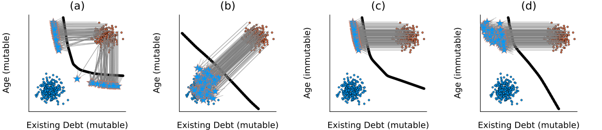

Introduction
This page demonstrates the core functionality of CounterfactualTraining.jl: training models that produce more plausible and actionable counterfactual explanations by holding them directly accountable during training.
Mutability Protection
When generating counterfactual explanations, some features may be immutable (e.g., age, race) while others are mutable (e.g., debt, income). Without protection, the contrastive divergence penalty can inadvertently make models more sensitive to immutable features, which is undesirable.
The key insight is that the contrastive divergence penalty gradient with respect to coefficient θ_{y⁺,d} is:
∂/∂θ_{y⁺,d} div(x⁺, x′, y; θ) = x′_d − x⁺_d
Since immutable features tend to differ between classes, the penalty would exacerbate the model’s existing sensitivity to those features. By protecting (zeroing gradients on) immutable features during counterfactual generation, the model learns to be relatively more sensitive to mutable features — producing counterfactuals that are actionable rather than relying on changes to features that cannot actually be changed.
Domain constraints are also applied to keep counterfactuals within plausible ranges for each feature.
Setup
using CounterfactualTraining
using CounterfactualTraining.Native
using CounterfactualExplanations
using Flux
using Plots
using Random
Random.seed!(42)
gr()Data
We create a 2D synthetic dataset with two Gaussian clusters. Feature 1 (x-axis) is mutable (:both), while feature 2 (y-axis) is immutable (:none).
N = 150
X1 = randn(Float32, 2, N) # Class 1: centered at origin
X2 = randn(Float32, 2, N) .+ 3.0f0 # Class 2: shifted by +3
X = hcat(X1, X2)
y = vcat(fill(1, N), fill(2, N))
domain = [(-3.0f0, 6.0f0), (-3.0f0, 6.0f0)]
mutability = [:both, :none]
data = CounterfactualData(X, y; domain=domain, mutability=mutability)
y_onehot = Flux.onehotbatch(y, 1:2)
train_set = Flux.DataLoader((X, y_onehot); batchsize=32, shuffle=true)Training
We train two identical models with different objectives:
- Vanilla objective (
VanillaObjective): standard cross-entropy training, no counterfactual penalty. - Full objective (
FullObjective): counterfactual training with energy differential, regularization, and adversarial loss.
Both use NativeGenerator for fast, batched counterfactual generation, and pass mutability=[:both, :none] to protect the immutable feature.
generator = NativeGenerator()
# Model A: Vanilla (no CF penalty)
model_vanilla = Chain(Dense(2, 8, relu), Dense(8, 2))
opt_vanilla = Flux.setup(Flux.Adam(1e-2), model_vanilla)
model_vanilla, log_vanilla = counterfactual_training(
VanillaObjective(needs_ce=true), model_vanilla, generator, train_set, opt_vanilla;
nepochs=20, maxiter=10, burnin=0.0f0, mutability=mutability, domain=domain, verbose=0
)
# Model B: Full (with CF penalty)
model_full = Chain(Dense(2, 8, relu), Dense(8, 2))
opt_full = Flux.setup(Flux.Adam(1e-2), model_full)
model_full, log_full = counterfactual_training(
FullObjective(), model_full, generator, train_set, opt_full;
nepochs=20, maxiter=10, burnin=0.0f0, mutability=mutability, domain=domain, verbose=0
)Counterfactual Generation
We generate counterfactuals for 20 samples from class 1, targeting class 2, using each trained model.
X_test = X[:, 1:20]
targets = fill(2, 20)
cfs_vanilla, _, _, _ = generate_counterfactuals!(
model_vanilla, X_test, targets, data, generator
)
cfs_full, _, _, _ = generate_counterfactuals!(
model_full, X_test, targets, data, generator
)Results
scatter(X[1, 1:N], X[2, 1:N], label="Class 1", color=:blue, ms=3)
scatter!(X[1, N+1:end], X[2, N+1:end], label="Class 2", color=:red, ms=3)
scatter!(cfs_vanilla[1, :], cfs_vanilla[2, :], label="CF (Vanilla)",
color=:green, markershape=:utriangle, ms=5)
scatter!(cfs_full[1, :], cfs_full[2, :], label="CF (Full)",
color=:purple, markershape=:star5, ms=5)
plot!(xlabel="Feature 1 (mutable)", ylabel="Feature 2 (immutable)")
With the FullObjective, counterfactuals should move primarily along the mutable feature (x-axis), leaving the immutable feature (y-axis) relatively unchanged. The model has learned to be less sensitive to the immutable feature, producing counterfactuals that are more actionable.